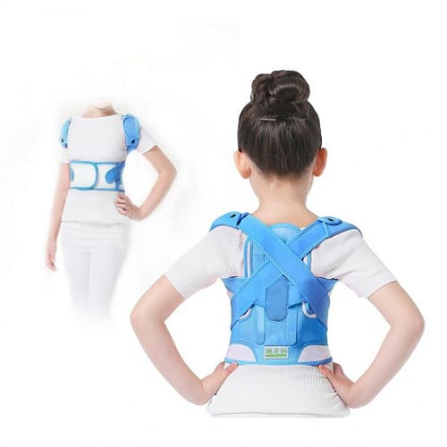
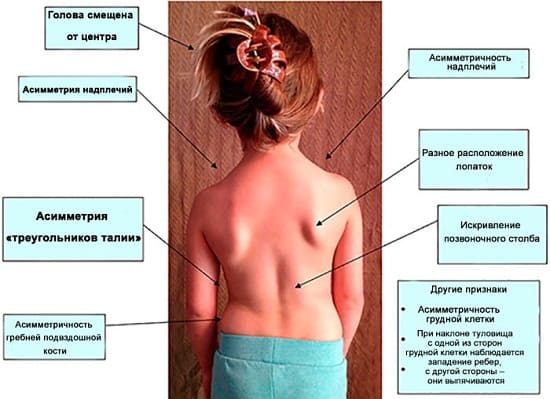
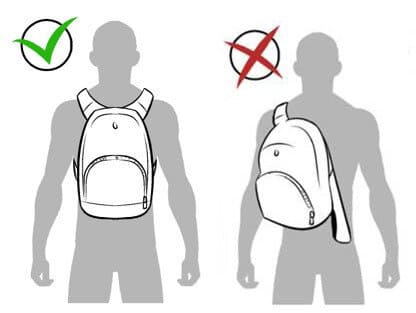
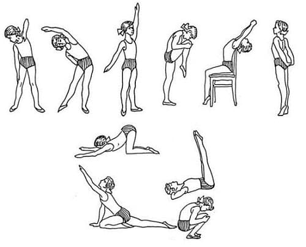
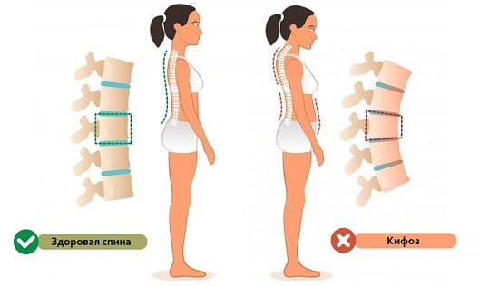
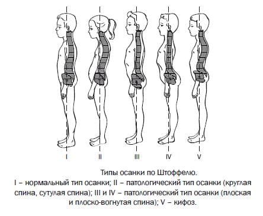

Существует множество нарушений позвоночника, которые могут развиваться в детском возрасте. Некоторые из них причиняют боль, другие — нет. Некоторые являются несерьезными и со временем проходят, другие требуют немедленного вмешательства врача. В этом разделе мы обсудим различные нарушения позвоночника и расскажем вам, как обратиться к врачу за помощью.
Причин боли в спине у детей множество. Большинство из них не опасны и со временем уходят. Но некоторые нарушения позвоночника могут иметь серьезные последствия и требуют срочной консультации врача. Вот перечень признаков, которые говорят о необходимости визита к врачу.
ПРИЗНАКИ И СИМПТОМЫ
Эти признаки и симптомы требуют немедленной консультации врача и обследования:
• сопутствующая слабость мышц, особенно рук или ног;
• нарушения походки или затруднения при ходьбе;
• онемение или покалывание, перемещающееся от позвоночника к рукам или ногам;
• недержание мочи или невозможность помочиться;
• недержание кала или невозможность дефекации;
• боль в спине, которая будит ребенка ночью;
• другие общие симптомы, сопровождающие боль в спине, например, лихорадка, потеря веса, общее недомогание.
Немедленно обратитесь к врачу при появлении любого из этих симптомов. Подробно запишите историю развития боли, чтобы показать врачу. Отметьте, где болит, когда и как появилась боль, как часто бывают боли, что облегчает и что усиливает боль, любые последние изменения деятельности или занятия спортом, которые могли вызвать или усилить боль.
Ваш врач полностью проверит неврологический статус и состояние опорно-двигательной системы вашего ребенка. Основываясь на результат осмотра и истории развития ребенка, врач посоветует либо кратковременное наблюдение, либо визуализирующие методы исследования, такие как рентгенография, МРТ или компьютерная томография, чтобы выяснить причину болей в спине и назначить соответствующее лечение.

СОВЕТ ДОКТОРОВ СИРС: ОБРАТИТЬСЯ К ПЕДИАТРУ ИЛИ К ХИРОПРАКТИКУ? Мы полагаем, что разумнее сначала посетить педиатра, чтобы убедиться в отсутствии проблем, требующих немедленного обследования и лечения. Если врач определил, что с медицинской точки зрения нет ничего страшного, обследование не нужно и диагностировал у вашего ребенка просто боль в спине без серьезных причин, тогда уже можно идти к хиропрактику. Хиропрактики специализируются на коррекции и выравнивании мышц, связок и позвонков, что обычно облегчает боль в спине. Они также могут помочь как при повреждениях шеи и спины с растяжением мышц или связок, так и при хронических состояниях наподобие сколиоза или других деформаций позвоночника. |
ПРИЧИНЫ
Ниже перечислены обычные причины, вызывающие боль в спине. Однако запомните, что диагностика и лечение нарушений позвоночника детей чрезвычайно сложны и не меняются предметом обсуждения в книге. Обратитесь к своему педиатру или врачу-ортопеду, чтобы по больше информации.
Растяжение или разрыв мышц спины. Это обычная травма у активных детей и подростков. Спина состоит из многочисленных групп крупных мышц, которые поддерживают позвоночники участвуют практически в любых движениях. К их растяжению могут привести:
• травмы во время занятий спортом;
• неправильная техника поднятия жестей;
• поднятие слишком тяжелых предметов;
• деятельность, постоянно перегружающая мышцы спины;
• резкие или неестественные повороты туловища;
• травма спины.
Обычно повреждается одна мышца. Пациенты при этом, как правило, жалуются на боль в определенной части спины. Болит обычно не возле позвоночника, а ближе к боку. Некоторые движения, например, наклоны и повороты, могут усиливать боль. Чтобы установить этот диагноз, педиатр осмотрит и прощупает спину.
Лечение. Лечение этого состояния может быть трудным, так как для заживления мышцам требуется много времени. Важно избегать усугубления травмы. Прежде всего надо исключить деятельность, которая вышла повреждение. Первые три дня на больное место полезно класть компресс со льдом на 20 минут несколько раз в день. Чтобы ускорить выздоровление, нужен период покоя. При Необходимости можно использовать противовоспалительные препараты, такие как ибупрофен, чтобы ослабить боль. Но даже при наилучшем течении для заживления требуется несколько недель. Соблюдение домашнего режима позволит избежать движений и упражнений, усиливающих боль.
Боль от рюкзака. Боль от рюкзака сейчас, когда дети начинают носить все большее количество учебников во все более раннем возрасте, становится обычной проблемой. Тяжелый груз сзади — прямой путь к больной спине, особенно у младших школьников. Слишком тяжелые рюкзаки или их неправильное ношение — одна из наиболее распространенных и наиболее предотвратимых причин боли в спине в детском возрасте.
Вот как можно предотвратить боль от рюкзака:
Выбирайте правильный рюкзак. Избегайте рюкзаков с одной лямкой, так как выяснилось, что именно эти модели обычно вызывают боль в спине. Покупайте рюкзак с двумя лямками. Убедитесь, что лямки широкие и подбиты мягким материалом, и отдайте предпочтение модели, у которой есть поясной ремень. В моделях для путешествий с металлическим каркасом вес распределяется более равномерно, перенося часть нагрузки на заднюю поверхность бедер.

Исследование 1700 детей показало, что чем тяжелее рюкзак, тем чаще жалобы на боль в спине. При изучении образа жизни 345 учеников 5—8-х классов выяснилось, что больше половины из них носили грузы тяжелее, чем 15% от их собственного веса, а у трети детей, носивших избыточный груз, были боли в спине, вынуждавшие их посещать врача или пропускать школу. |
Уменьшите груз. Ортопеды настаивают, что вес рюкзака с содержимым не должен превышать 10% от веса ребенка. Таким образом, ребенок, весящий около 36 кг, не должен носить груз тяжелее 3,6 кг. Взвесьте рюкзак своего ребенка — вы будете поражены его весом.
Везти лучше, чем носить. Попробуйте «проехаться на колесе» — купите рюкзак на колесиках. Это лучший способ разгрузить спину вашего ребенка.
Носить разумно. Самая тяжелая часть рюкзака должна «сидеть» на пояснице, над тазовыми костями. Кладите тяжелые предметы вниз, таким образом они окажутся у нижней части спины. Старайтесь не нагружать верхнюю часть спины — это наиболее часто приводит к растяжениям мышц спины.
Правильно поднимайте рюкзак. Расскажите и покажите вашему ребенку, что, поднимая тяжелый рюкзак или другие тяжелые предметы, надо присесть, сгибая колени, а не наклоняться вперед. Наклон вперед при поднятии тяжестей требует сильного напряжения мышц спины, что может привести к травме.
Купите два комплекта учебников. Хотя это самое дорогое лекарство, но оно же и самое действенное. Вместо того чтобы таскать тяжелые книги в школу и из школы домой, купите или возьмите взаймы хотя бы самые толстые из них, чтобы заниматься по ним дома.
Уменьшение веса рюкзака особенно важно для детей, уже имеющих искривление позвоночника или неравномерное развитие мышц спины. Часто во время осмотра врач замечает, что мышцы с одной стороны спины развиты больше, чем с другой, из-за чего лопатки находятся не на одном уровне. Ношение тяжелого рюкзака может ухудшить это состояние. И, наконец, если ваш ребенок носит рюкзак, в дополнение к перечисленным выше мерам научите его укреплять мышцы спины, плавая брассом или с помощью силовых тренировок под наблюдением тренера. |
Боль в пояснице. Если педиатр исключил неизвестные и/или серьезные причины боли в пояснице, то вашему ребенку, скорее всего, поставят диагноз эссенциальной поясничной боли. Это хроническое заболевание обычно наблюдается у детей, страдающих ожирением и малоподвижных. Самое важное при лечении боли в пояснице — ребенок ДОЛЖЕН ОСТАВАТЬСЯ ПОДВИЖНЫМ И АКТИВНЫМ! Мы всегда говорим нашим пациентам, что сильная спина очень важна для здорового развития и жизнедеятельности.
Можно выполнять специальные упражнения для укрепления позвоночника и поддерживающих его мышц. Уменьшение активности и малоподвижность усугубляют проблему! Мы советуем своим пациентам с осторожностью применять противовоспалительные препараты, поскольку они только маскируют симптомы. Согревающий пояс на больное место поможет облегчить боль после тяжелого дня. Дополнительно можно применять хиропрактику, мануальную терапию, массаж спины.

Сколиоз. Сколиозом называют патологическое искривление позвоночника в средней или нижней его частях. Причина сколиоза, как правило, неизвестна. Очень редко сколиоз может развиться из-за аномалий развития позвоночника или сформироваться вторично на фоне неврологических нарушений, например, при детском церебральном параличе или мышечной дистрофии.
Симптомы сколиоза начинаются в подростковом возрасте. Иногда подростки и юноши отмечают несильные боли, связанные со сколиозом, но обычно боль появляется в старшем возрасте. Часто сколиоз первыми замечают родители, видя разницу в высоте плеч или плохо сидящую одежду.
Обследование позвоночника. Ваш педиатр проведет осмотр, чтобы выявить сколиоз. Заподозрив эту патологию, он сделает специальное рентгенологическое исследование, чтобы определить степень сколиоза. Это важно, потому что лечение зависит от степени выраженности проблемы.
Лечение сколиоза. Как правило, при умеренно выраженном сколиозе лечения вообще не требуется, достаточно просто наблюдения. При необходимости — в случаях тяжелого или прогрессирующего сколиоза — используют специальные корсеты. Изредка бывает нужно хирургическое вмешательство на поврежденном позвонке.
Смещение позвонков. Позвоночник состоит из множества позвонков, которые обычно расположены друг над другом как блоки. Смещение позвонков обычно развивается из-за дефекта позвонка, из-за чего он выскальзывает со своего места относительно остальных частей позвоночника. Это может произойти при неправильно сросшемся небольшом переломе. Смещение обычно развивается в нижней части спины и постепенно прогрессирует в течение длительного времени. Группу риска составляют дети, занимающиеся видами деятельности, сильно нагружающими нижнюю часть спины, такими, как гимнастика, футбол, черлидинг и танцы.
Симптомы. Симптомов может не быть вообще или возможно появление боли в пояснице, которая отдает в ногу и усиливается в положении стоя. Иногда бывают судороги икроножных мышц. Если ваш ребенок описывает эти симптомы, педиатр проведет осмотр спины и неврологическое обследование. При подозрении на эту патологию врач назначит рентгенографию или компьютерную томографию, чтобы рассмотреть позвонок со всех сторон.
Лечение. Для лечения часто назначают специальные укрепляющие упражнения. Необходимо полностью исключить деятельность, которая может ухудшить состояние — например, занятия футболом, гимнастикой. При необходимости используют индивидуально изготовляемые корсеты, что облегчает боль. Как правило, по мере роста ребенка со временем дефект заживает, и большинство детей полностью выздоравливают без каких-либо последствий в будущем. Очень редко смещение нарастает. В этих случаях необходима консультация хирурга для решения вопроса о необходимости оперативного вмешательства на позвоночнике.
Кифоз. Так называют чрезмерное искривление грудной или средней части позвоночного столба. Кифоз чаще встречается у мальчиков в первой половине пубертатного периода. Большинство наблюдаемых нами пациентов приводят родители или бабушки, заметившие прогрессирующее ухудшение осанки.
Симптомы. Обычно ребенок не предъявляет никаких жалоб, но его вид, особенно в положении сидя, говорит сам за себя. Впрочем, пациенты с выраженным кифозом, разумеется, могут жаловаться на боль. Для определения степени искривления педиатр попросит ребенка сделать несколько наклонов и движений спиной. Часто назначают рентгенографию, чтобы оценить состояние позвоночника в целом.

СОВЕТ ДОКТОРОВ СИРС: СТОЙТЕ ПРЯМО! Мама была права! Важно поощрять детей следить за правильной осанкой, когда они сидят или стоят. Не пилите их, но время от времени мягко напоминайте им об этом, если они сутулятся. |
Лечение. Бывает, что искривление прогрессирует по мере роста ребенка и в будущем помешает ему поднимать тяжести или выполнять определена действия. Хорошая новость — на самом деле это случается крайне редко. В большинстве случаев образование горба связано с плохой осанкой й исправляется регулярными упражнениями для развития спины и тренировкой правильной осанки. Фиксация с помощью корсета или, в исключительно редких случаях, хирургическое лечение применяются только при определенных деформациях позвоночника.
Травмы позвоночного столба и шеи. Удар тупым предметом по спине или повреждения при аварии, в частности автомобильной, могут привести к повреждениям спины и шеи. Поэтому в таких случаях обязательно делают рентгенографию позвоночника, чтобы исключить серьезные травмы.
Хлыстовые травмы. Они часто происходят при автомобильных авариях и сопровождаются растяжением верхней части позвоночника — шейного отдела. Если диагностирована хлыстовая травма, при необходимости некоторое время носят шину-воротник для фиксации шеи. При этой травме для восстановления требуется длительное время.
Переломы позвоночника. Они редко встречаются у детей и подростков, но все же возможны при тяжелых авариях и несчастных случаях. При выявлении перелома требуется немедленная консультация врача, специализирующегося на травмах позвоночника.
Растяжение позвоночника. Это частый результат спортивной или автомобильной травмы. Необходима рентгенография для исключения более серьезных повреждений.
Другие редкие причины. Ниже перечислены очень редкие у детей и подростков причины, которые обычно исключают на основании истории развития ребенка, рентгенографии, компьютерной томографии или МРТ.
Ювенильный остеопороз. Может приводить к истончению и хрупкости позвонков. Встречается чрезвычайно редко и обычно связан с тяжелым дефицитом кальция и/или витамина Б. Признаки остеопороза видны на обычном рентгеновском снимке.
Доброкачественные и злокачественные опухоли. Они редко встречаются у молодых людей и могут быть исключены на основании анализа истории болезни, врачебного осмотра и рентгенографии при необходимости.

СОВЕТ ДОКТОРОВ СИРС: ФИЗИОТЕРАПИЯ При большинстве видов хронических болей в спине или деформаций очень важно выполнять специальные упражнения для спины. Мы рекомендуем вам несколько раз посетить физиотерапевта, который научит вас и вашего ребенка упражнениям на растяжение и статическим, которые надо выполнять именно при вашей проблеме со спиной. Желательно ежегодно посещать этого специалиста для оценки изменений в состоянии здоровья ребенка. |
Инфекции позвоночника. Также известны под названием остеомиелита и редки в молодом возрасте. Могут быть следствием оперативных вмешательств на спине, люмбальной (спинальной) пункции или вторичными при генерализованном сепсисе. Практически никогда не наблюдаются у здоровых детей.
Здоровье ребенка от докторов Сирс / Сирс У. и др.